우리 한글날에 어울리는 문화 콘텐츠를 찾아보세요!
11월 넷째 주, 쌀쌀해진 날씨에 떨어지는 체온을 따뜻하게 데워줄 다양한 문화 프로그램이 준비되어 있습니다!
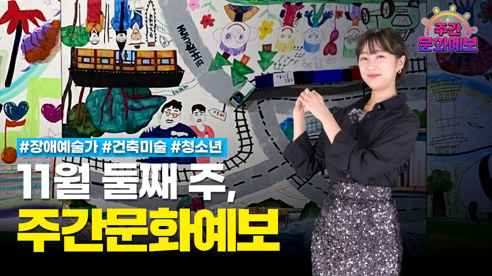
가을의 마지막을 기념할 11월 둘째 주의 문화 프로그램을 소개합니다!
겨울이 코앞으로 다가온 것이 실감 나는 쌀쌀한 날씨, 따뜻한 문화행사로 서로의 온기를 나눠 보는 건 어떨까요?
이번 한 주도 다양한 문화와 함께 해보는 건 어떨까요?
이번 주의 문화 소식도 단풍의 색처럼 다채롭게 준비했습니다!
문화가 있는 날 10주년을 맞아, 전국으로 문화 나들이를 가보는 건 어떨까요~?
9월도 빠르게 지나 어느덧 10월이 되었습니다! 올해의 10월은 더욱 특별한데요. 10월은 문화가 있는 날 10주년을 맞아 더욱 풍성한 문화 행사들로 가득합니다!
나들이하기 딱 좋은 계절, 가을! 계절에 맞춰 변화하는 풍경도 감상하고, 문화생활도 즐겨보는 건 어떨까요~?
푸른 하늘과 선선한 바람을 느끼며 가을에 어울리는 문화생활을 해보는 것은 어떨까요~?
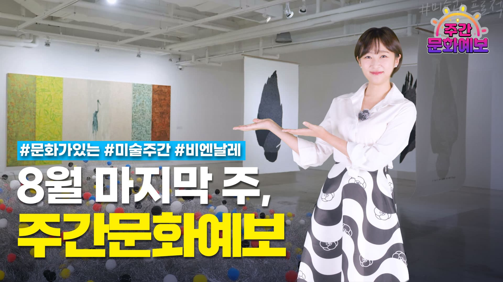
매월 마지막 주 수요일은 문화가 있는 날! 문화로 더~가득한 한 주를 맞이할 준비되셨나요?
[주간문화예보 11월 넷째 주] 떨어지는 체온을 따뜻하게 데워 줄 이번 주 문화 소식
지역문화진흥원
[주간문화예보 11월 둘째 주] 가을의 끝자락을 풍성하게 장식할 이번 주 문화 소식
[주간문화예보 11월 첫째 주] 쌀쌀해진 날씨에 곁들이는 따뜻함 가득한 이번 주 문화 소식
[주간문화예보 10월 넷째 주] 서로의 관계를 더욱 돈독하게 만들어줄 이번 주 문화 소식
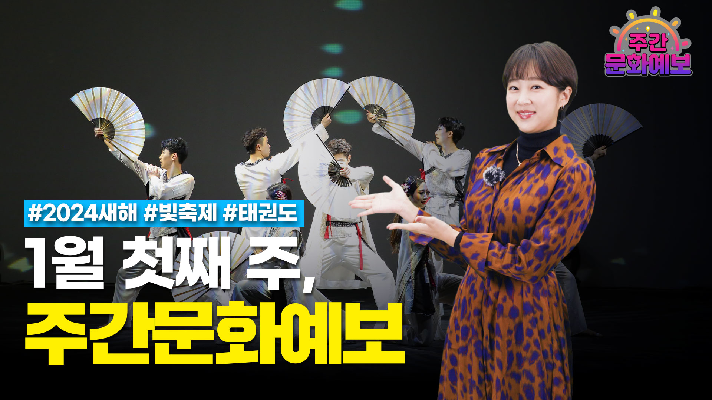
[주간문화예보 1월 첫째 주] 2024년을 의미있게 시작하고 싶을 때 즐기기 좋은 이번 주 문화 소식
2024년은 청룡의 해, 갑진년이죠! 1월 첫째 주도 주간문화예보와 함께 의미있는 한 주 보내시길 바랍니다.
rcdarcda
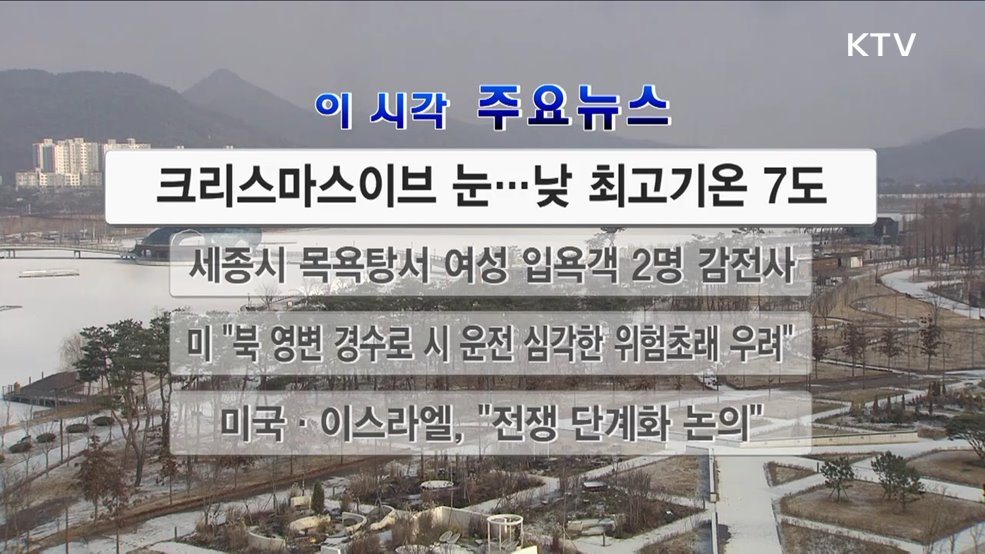
이 시각 주요뉴스 (2784회)
이 시각 주요뉴스입니다.1. 크리스마스이브 눈···낮 최고기온 7도크리스마스 이브이자 일요일인 오늘(24일)은 전국 대부분 지역에 눈이 내리겠습니다. 서울과 서해안을 중심으로는 대설주의보가 내려졌으며 서해안은 낮까지, 제주도는 내일 새벽까지 눈이 내릴 것으로 예보됐습니다. 낮 최고기온은 0도에서 7도를 보이겠고, 미세먼지 농도는 보통 수준을 보이겠습니다.2. 세종시 목욕탕서 여성 입욕객 2명 감전사오늘(24일) 새벽 세종시의 한 목욕탕에서 여성 입욕객 3명이 감전돼 심정지 상태로 병원으로 옮겨졌으나 2명이 숨졌습니다. 쓰러진 여성은 모두 70대인 것으로 전해졌으며 경찰과 소방당국, 전기안전공사 등은 정확한 사고원인을 조사하고 있습니다.3. 미 "북 영변 경수로 시 운전 심각한 위험초래 우려"미국 정부는 현지 시간으로 23일 북한 영변 경수로 시 운전에 대해 "안전을 포함해 심각한 우려를 불러일으킨다"라고 말했습니다. 그러면서 미 국무부는 "IAEA의 감시와 지원이 없다면 북한과 역내, 전 세계 원자력 산업에 심각한 위험이 초래될 수 있다"라고 말했습니다.4. 미국·이스라엘, "전쟁 단계화 논의"미 백악관은 미국과 이스라엘 정상이 현지시간으로 23일 하마스 축출 전쟁 지속과 민간인 희생 최소화의 양립이라는 '난제'를 놓고 의견을 교환했다고 밝혔습니다. 특히, 두 정상은 가자지구에서 벌이고 있는 군사작전 '단계화(phasing)'와 남아있는 모든 인질 석방의 중요성에 대해 논의했습니다.5. NYT "푸틴, 우크라 전쟁 휴전 협상 타진 중"푸틴 러시아 대통령이 우크라이나와 휴전할 용의가 있다는 신호를 조용히 보내고 있다고 미국 뉴욕타임스가 보도했습니다. NYT는 크렘린 궁과 가까운 2명의 러시아 전직 고위 관료 인터뷰를 토대로 푸틴 대통령 특사로부터 관련 메시지를 받았다고 보도했습니다.6. 기름값 11주 연속 하락 휘발유 1천500원대국제
한국정책방송원
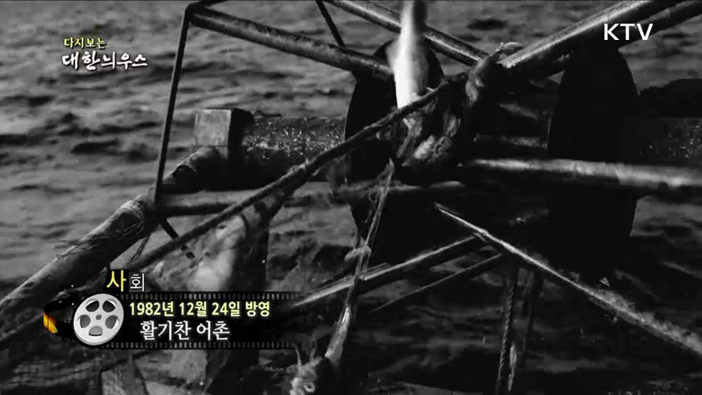
다시보는 대한늬우스 (82. 12. 24)
-활기찬 어촌(82')-평화통일 자문위원 일선 위문(82')-대학입학 학력고사(82')-젖소 인공 증식(82')-아시안게임 하이라이트·개선(82')( KTV 국민방송 케이블방송, 위성방송 ch164, www.ktv.go.kr ) ⓒ 한국정책방송원 무단전재 및 재배포 금지
이 시각 주요뉴스 (23. 12. 24. 12시)
이 시각 주요뉴스 (2783회)
이 시각 주요뉴스입니다.1. 포스코 포항제철소 화재 초기 진화 완료오늘(23일) 오전 7시쯤 포스코 포항제철소에서 원인을 알 수 없는 불이 나 일부 공장 가동이 중단됐습니다. 소방차량이 현장으로 출동해 1시간 40분만에 초기 진화를 완료한 상태입니다.2. 전국 대설특보 해제···위기경보단계 하향중앙재난안전대책본부는 전국에 내린 대설특보가 해제됨에 따라 위기경보 수준을 '관심' 단계로 하향했습니다. 중대본 1단계도 해제한다고 밝혔습니다. 폭설로 활주로를 폐쇄했던 제주공항도 정상화된 상황입니다.3. 전북 장수군 북쪽 17km 부근서 규모 3.0 지진오늘(23일) 새벽 4시쯤 전북 장수군 북쪽 17km 부근에서 규모 3.0의 지진이 발생했습니다. 소방당국은 지진과 관련해 별다른 피해 신고나 출동은 없었다고 밝혔습니다.4. 유엔 안보리, 가자지구 인도지원 확대 결의 채택유엔 안전보장이사회가 팔레스타인 가자지구로 인도주의적 지원을 확대하기 위한 결의를 채택했습니다. 미국과 러시아가 기권표를 낸 가운데 결의안은 찬성 13표로 가결됐습니다.5. WHO "열대성 전염병 뎅기열 감염 급증"세계보건기구(WHO)는 기상이변과 국가 간 분쟁 여파로 열대성 전염병 뎅기열 감염이 올해 초부터 급증하고 있다고 밝혔습니다. 감염 사례는 500만 건 이상, 사망자는 5천 명이 넘었다는 설명입니다. 뎅기열은 모기에 물린 상처에 바이러스가 침투해 걸리는 감염병입니다.6. 하이패스 전용구간 225회 무단통과···3배 벌금형하이패스 전용구간을 통행료 없이 무단 통과한 운전자가 1심에서 '3배 벌금형'을 선고받았습니다. 이 50대 남성은 2019년부터 전자카드 잔액이 없는 상태로 하이패스 전용 구역을 225회에 걸쳐 무단 통과해 유죄 판결을 받았습니다.7. 전국 주유소 기름값 11주째 하락전국 주유소 휘발유와 경유 판매 가격이 11주째 하락세를 이어갔
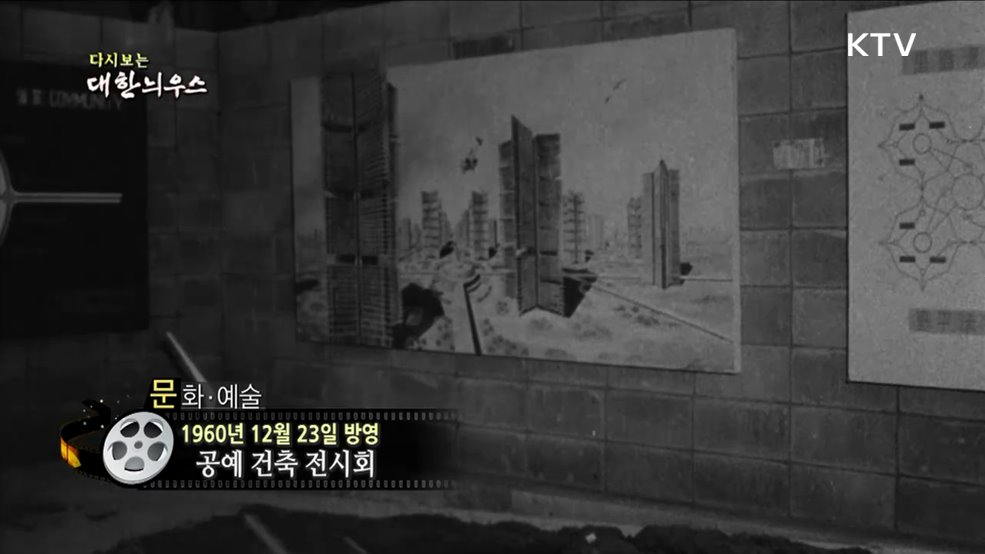
다시보는 대한늬우스 (60. 12. 23)
-공예 건축 전시회(60')-새로운 인공위성(60')-런던의 연말 풍경(60')-영화 오디션(60')-일본과의 농구경기(60')( KTV 국민방송 케이블방송, 위성방송 ch164, www.ktv.go.kr ) ⓒ 한국정책방송원 무단전재 및 재배포 금지
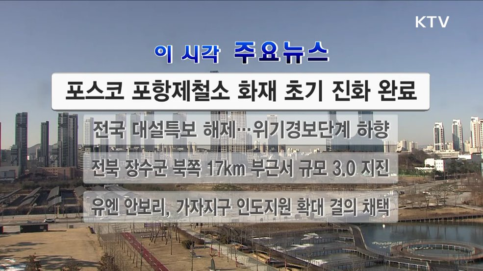
이 시각 주요뉴스 (23. 12. 23. 12시)
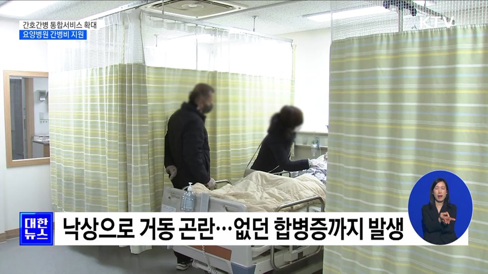
간호간병 통합서비스 확대···요양병원 간병비 지원
최대환 앵커간호사가 간병까지 전담하는 간호간병 통합서비스가 확대 운영되고, 중증 환자와 섬망 환자를 집중 관리하는 전담 병실도 도입됩니다.이렇게 되면 국민의 간병비 부담이 10조 원 넘게 줄어들 걸로 기대됩니다.김경호 기자가 보도합니다.김경호 기자요양병원에 입원한 아버지를 면회하기 위해 자녀와 가족들이 찾았습니다.90세가 넘는 나이에도 항상 건강하게 지내던 환자는 지난달 낙상으로 골반뼈가 부러졌습니다.거동이 불편해 누워지내게 되자 없던 합병증까지 앓게 돼 간병비에 치료비까지 보호자들의 부담은 커졌습니다.녹취 요양병원 환자 보호자"이런 상황이면 장기로 가잖아요. 한두 달에 안 끝나고 이런 부분이 굉장히 실질적으로 어렵게 다가오는 거죠. 치료비는 얼마 안 나오는데 간병비로 한 달에 몇 백씩 지급해야 하니까."지난해 국민이 간병비로 지출한 금액은 10조 원으로 추산됩니다.급속한 고령화로 간병비 부담은 더욱 커질 것으로 예상됩니다.김경호 기자 rock3014@korea.kr"직접 간병인 앱에서 인력을 구해보니 하루 간병비가 17만 원에 달했습니다. 단순 계산으로 한 달 간병비가 500만 원이 넘는 셈입니다."정부가 간호간병통합서비스 제공 범위를 일부 병실에서 병원 전체로 확대합니다.경증 환자만 서비스 병실에 입원시키고 손이 많이 가는 중증 환자는 배제하던 관행을 없애겠다는 겁니다.통합서비스는 건강보험이 적용되는데 개인 간병인을 고용할 때보다 비용이 20% 수준으로 줄게 됩니다.전체 국민의 간병비 부담은 10조 7천억 원 가량 감소할 전망입니다.중증 환자와 섬망 환자를 집중 관리하는 전담 병실도 도입됩니다.간호사 1명당 환자 4명, 간호조무사 1명당 환자 8명을 담당하게 됩니다.전담 병실은 상급종합병원과 종합병원을 대상으로 우선 도입된 뒤 단계적으로 확대될 예정입니다.<b
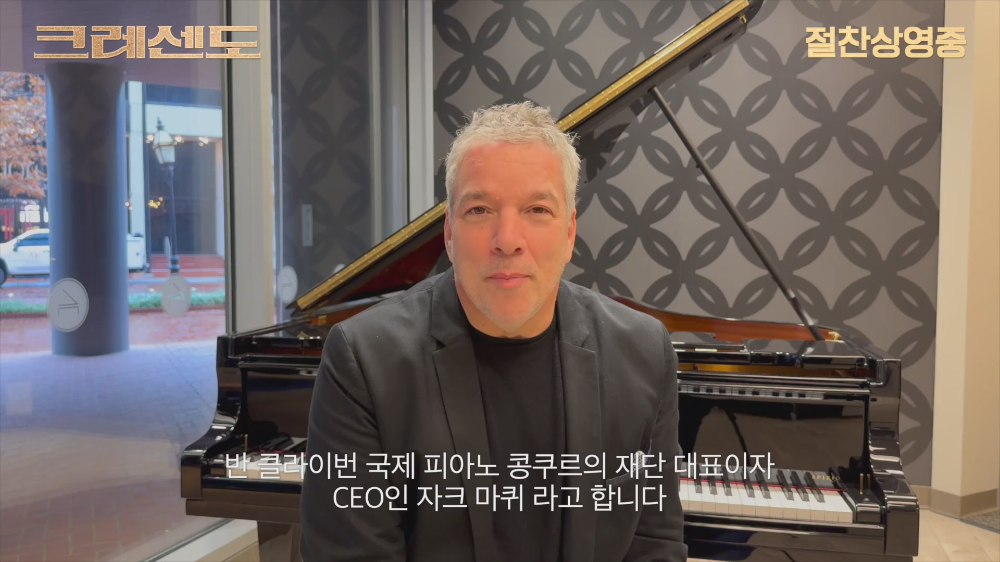
크레센도[기타]
|| 부제 : 기타|| 관람등급 : 전체관람가|| 상세정보 : "크레센도" "절찬상영중"|| 언어 : 영어|| 포맷 : mp4|| 관람위치 : 온라인 VOD|| 용도 : 웹서비스
한국영상자료원
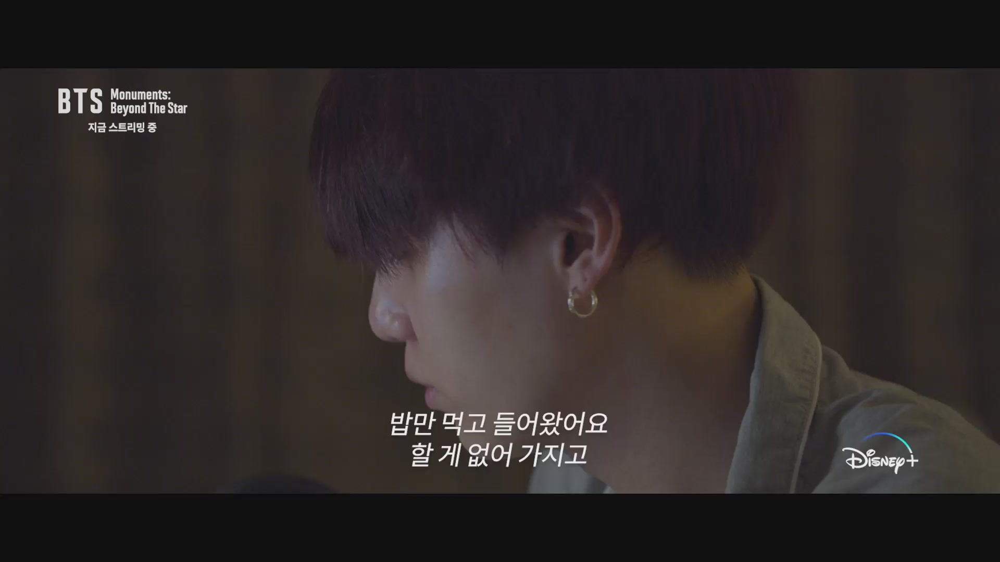
BTS Monuments: Beyond The Star[예고편]
|| 부제 : 예고편|| 관람등급 : 전체관람가|| 상세정보 : "BTS Monuments: Beyond The Star 지금 스트리밍 중" "Disney+"|| 언어 : 한국어|| 포맷 : mp4|| 관람위치 : 온라인 VOD|| 용도 : 웹서비스
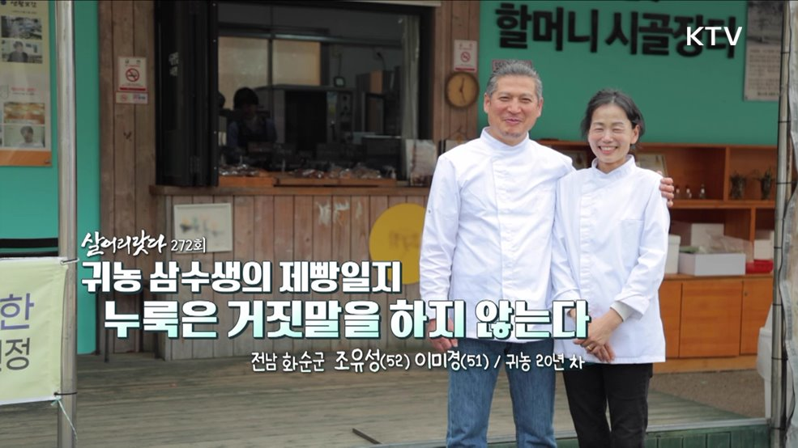
귀농 삼수생의 제빵일지 누룩은 거짓말을 하지 않는다
1. 프롤로그 : 귀농 실패! 재귀농 실패! 재 재귀농은?- 여기, 총 세 번에 걸쳐 귀농에 도전한 사람이 있다. 서울에서 대학을 졸업 후 고향 순천으로 귀농! 1년 만에 털고 나왔다. 두 번째는 결혼 후 화순으로 귀농! 닭을 키워 유정란 농장을 운영하던 도중, 태풍 볼라벤이 농장을 삼켰다. 재귀농 실패! 그 후, 세 번째 귀농은 과연?2. 산을 넘어가는 작은 불빛 하나. 새벽 출근길- 새벽 5시 반, 전남 화순군 이서면과 능주면의 경계. 산을 넘어가는 헤드라이트 불빛이 보인다. 오늘의 주인공, 조유성씨의 차다. 벌써 10개월 몸에 밴 새벽 출근길이다.- 그가 도착한 곳은 능주면의 어느 빵집. 가게에 들어서자마자 쉴 틈 없이 빵을 만들고 난 유성씨는 다시 차를 타고, 왔던 길을 되돌아 이서면의 빵집으로 향한다. 또 빵을 만든다. 그렇게 그는 매일 새벽, 빵을 만들기 위해 왕복 100분 거리를 오간다.- 10년 차 시골빵집의 주인인 조유성씨. 화순군 이서면에서 시작한 그의 작은 빵집은... '줄 서는 빵집' '오후 2시면 빵이 사라지는 빵집'으로 소문 자자하다. 유성씨 빵의 인기는 민들레 홀씨처럼 번져 올해 2월, 능주면에 2호점을 냈다.- 인구 70명의 한적한 시골마을에서 시작한 시골빵집의 성공비결은 무엇일까?3. 서툰 제빵사가 눈 뜬, 무한한 '발효'의 세계- 유성씨는 시중에 파는 '이스트'가 아닌, 막걸리를 만들 때 쓰는 자연발효 누룩으로 빵을 만든다. 누룩은 바람과 온도, 주변 자연 환경의 영향을 고스란히 받는 살아있는 균이다. 그만큼 다루기가 까다롭다. 누룩에 그만의 오랜 노하우가 더해진 반죽은 '발효의 시간'을 거쳐 빵이 된다.- 아내 이미경씨 역시 남다르다. 커피생두를 빵 굽듯 오븐에 구워낸다. 비싼 로스터기가 없어도 그녀의 커피는 향기롭다.- 유성씨는 말한다. '나는 서툰 제빵사였기 때문에 매일 실패하고, 매일 공부하며 비로소 발효의 세계에 눈을 뜨게 되었다'라고
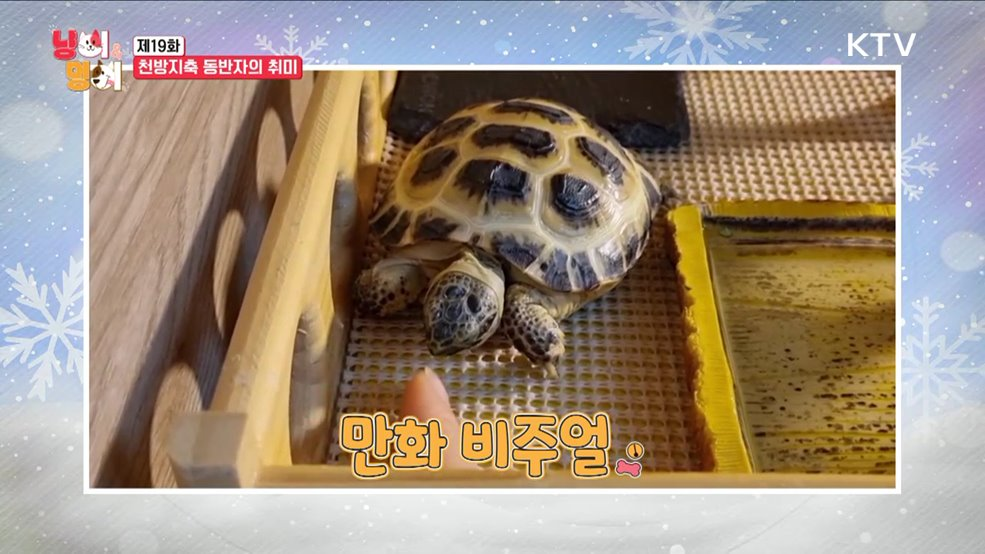
천방지축 동반자의 취미
1. SNS 핫 펫플루언서① 참외 러버 고양이 꼬물이의 취미- 유튜브 잘사는 집사 @bling_cat- 냉장고 열리는 소리만 들어도 달려오는 고양이 꼬물이! 꼬물이의 최애 간식은 참외? 방문도 스스로 열고 먹으러 오는 못 말리는 참외 열정! 다른 고양이 친구들에게도 뺏기지 않으려 견제까지!? 그런데 꼬물이에게는 또 이상한 취미가 있다는데~~ 쓰레기통에서 오직 비닐만 훔쳐 가는 꼬물이! 침대 밑에 왜 가지고 가는 건데~? 함께 사는 고양이 친구들마저 신기하게 쳐다보는 꼬물이의 은밀한 취미 생활! 비닐이 그렇게 좋아 꼬물아?!② 새사냥을 즐기는 시바견 식빵이의 두더지 게임- 유튜브 시바견 식빵이 @bread_star- 새 사냥 좋아하는 시바견 식빵이를 위한 앵무새 장난감 준비! 날아다니는 앵무새에 간식을 달아놓는다면? 화가 난드아~! 닳을 듯 말 듯 자꾸 도망가는 앵무새에 해탈 직전 식빵이! 이번엔 특별히 두더지 게임을 준비한 집사?! 빡침 주의! 간식 두더지 게임 시작~! 이리저리 도전해보는데... 과연 식빵이는 무사히 간식을 쟁취할 수 있을까?③ 집사와 놀아주는 육지거북이 뚜뚜- 유튜브 육지거북뚜뚜 @DDUDDUBBON- 하~암~ 맛깔나게 하품하는 거북이 뚜뚜의 일상! 귀염둥이 뚜뚜와 떨어지기 싫은 집사의 은밀한 취미는 뚜뚜 괴롭히기?! 손가락으로 깔짝깔짝~ 뚜뚜 약 올리기! 앙! 물어버릴 테다! 거북이도 물 수 있다고요! 물려도 뚜뚜와 함께라면 너무 좋아! 궁둥이 씰룩~씰룩~ 걷는 치명적 뒤태부터 냠냠 냠냠 뚜뚜의 상추 먹방 한번 보고 가실래요~?2. 찾아가는 왕진!윤병국 수의사의 찾아가는 왕진! 유기견 보호소 봉사- 유기견, 유기묘 400여 마리가 생활하고 있는 안성의 한 보호소에서의 두 번째 진료 시간! 김자영 소장님의 진두지휘로 봉사에 이어 아이들의 진료까지 진행했는데... 갓 입소한 귀여운 아이부터 한눈
관련기관 안내